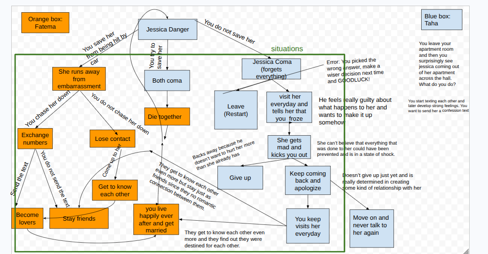
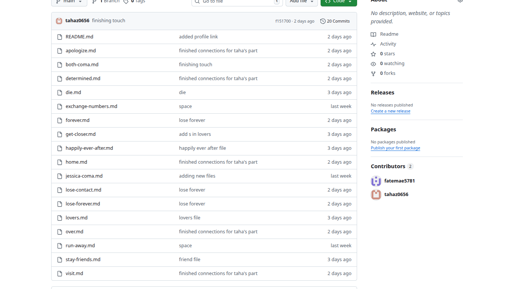

For my SEP 10 project, my teacher assigned us to create an adventure story with a partner. The goal was to practice our collaboration skills and learn how to organize files and link pages using basic Git commands like git add, commit, push, pull, and status. My partner and I chose the topic of anime romance as one of our choices and that is how we became partners, and our story was called "Jessica Danger." The story is about a girl named Jessica who almost gets hit by a car, and we created three different endings depending on the choices made.
In my project, I made an adventure story linked with different choices. The story starts with Jessica crossing the street when a car is speeding towards her. The player has three options: try to save her and succeed, try to save her but both of you die, or do nothing and Jessica gets hurt. Each choice leads to a different page with a different ending, like Jessica starting her love adventure, or ending with heartbreak and sadness. I linked the files with each other so the player can choose what happens next. My main goal was to make the story fun and easy to follow, so players can pick different options and see different endings and just feel like its an anime romance. The teacher assigned this project to improve our collaboration skills, and get more better with Git commands and linking files and to maybe make a friend who has the same common interest as you.
One of the hardest parts was coming up with a good story that connects all the different choices and endings. I had to think about what kind of ending I wanted for Jessica and how the story would flow smoothly from one choice to another. To solve this, I looked at anime romance stories I watched before and got ideas from their endings and scenes. Another challenge was using Git commands correctly. Sometimes I made small mistakes like forgetting spaces in commands like git add. not git add . or missing quotation marks with the git commit like git commit -m "like, which caused errors. I had to go back and carefully check my commands and fix them. Linking the pages together was also tricky because I sometimes linked the wrong files, which made the links not work. I had to carefully check my code and make sure all the links linked to the right pages. These challenges taught me to pay more attention to detail and be patient when fixing mistakes.
If I had more time, I would think more about making the story more dramatic and emotional. I would add more choices and different endings to make the adventure longer and more exciting. I would haave done the extra credit the html to add color and more deigns to make look interesting.
link to the project
